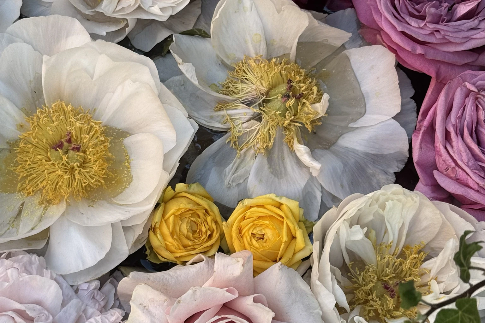
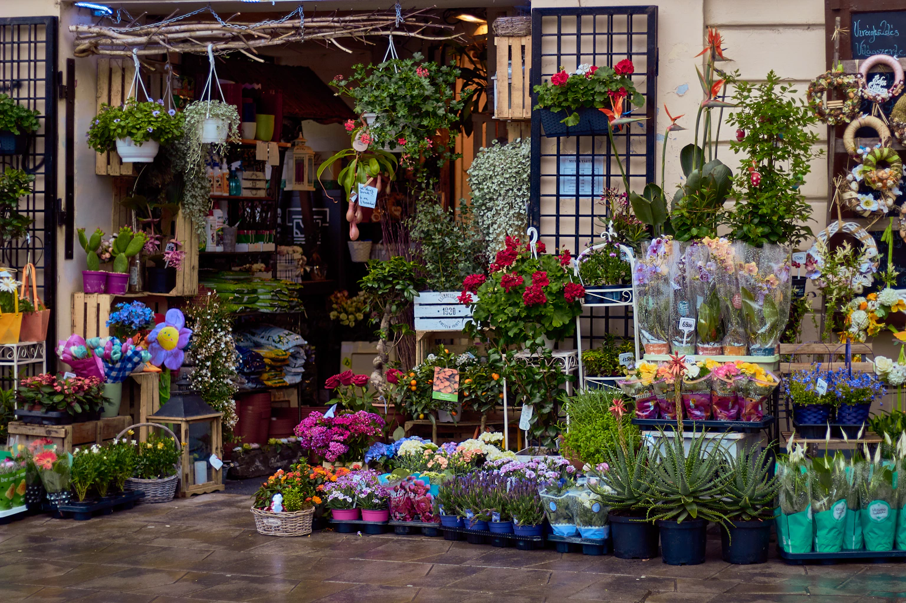

Season over sameness
We embrace what is growing beautifully now instead of forcing flowers to fit a fixed picture.
About Us
Rosewood began with one table, three buckets, and a belief that flowers should look like themselves—expressive, fleeting, and gloriously alive.

Founded in 2018
Our founder, Meera Rao, trained in garden-led floristry before returning to Bengaluru. She wanted to create the kind of local flower shop she loved abroad: relaxed enough to visit on a whim, serious enough to trust with life’s important days.
Today, a team of twelve florists, producers, and riders works from our Indiranagar studio. We buy with the seasons, design in small batches, and keep delivery close to home.
years arranging in Bengaluru
people in our studio team
seasonal stems sourced in India
bouquets made from a fixed recipe
What guides us
We embrace what is growing beautifully now instead of forcing flowers to fit a fixed picture.
Clean vases, hydrated travel, handwritten cards, and a real person at the other end of the phone.
Smaller buying cycles, reusable mechanics, paper-first wrapping, and leftover stems donated locally.
Seasonal Provenance
Rather than relying on chemical-preserved hothouse imports, our arrangements follow South India’s living seasons. Discover what our florists forage, source, and compose across the year.
“Morning mists in the Nilgiris create slow-opening petals with extraordinary vase longevity. Harvested at first light.”
— Meera Rao, Founder & Arranger
“Southwest monsoon rains feed vigorous stems. We condition these delicate blooms in ambient rainwater rest.”
— Kabir Sen, Ikebana Specialist
“Rich festive warmth with architectural seed heads, sourced from organic grower co-ops within 40 km of our studio.”
— Ananya Deshmukh, Installations Lead
“Clear winter skies bring deep color saturation and woody branches that give dramatic height to foam-free urns.”
— Devika Nair, Studio Botanist
Arranged using brass kenzan frogs, chicken wire, and fresh water mechanics—never microplastic floral foam.
Over 90% of our blooms travel in climate-guarded vehicles under 250 km—never chemical-soaked air freight.
Spent stems and organic clippings are collected daily by neighborhood urban composting partners in Indiranagar.

Come say hello
Our studio flower bar changes every morning. Visit to choose stems or leave the composition to us.
Visit the studio